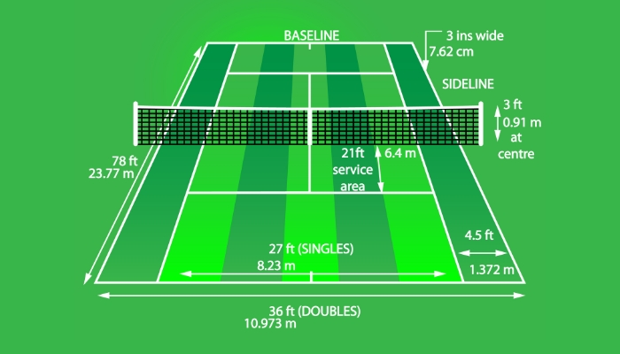
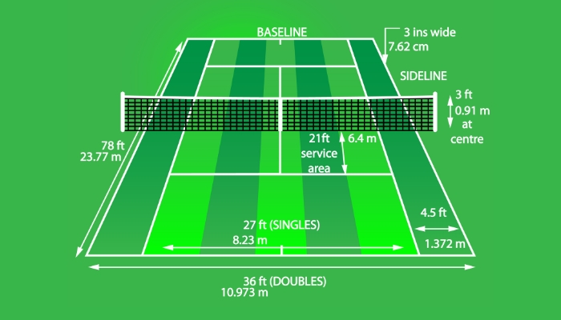

Tennis is a high-intensity racquet sport played in singles (one-on-one) or doubles (two-on-two) formats. Players use a stringed racquet to strike a felt-covered rubber ball over a net and into the opponent’s court. The game is played on different surfaces such as grass, clay, and hard courts, each influencing the speed and style of play. Tennis demands a unique blend of physical endurance, agility, power, hand-eye coordination, and mental resilience. A point is won when the opponent fails to return the ball within the designated boundaries. Matches are generally played in best-of-three or best-of-five set formats depending on the tournament.
The sport is governed globally by the International Tennis Federation (ITF), while professional tours are organized by the ATP (men’s) and WTA (women’s) associations. The pinnacle of competitive tennis is represented by the four Grand Slam tournaments: the Australian Open (played on hard courts in Melbourne), the French Open (on clay courts in Paris), Wimbledon (on grass courts in London), and the US Open (on hard courts in New York). Winning all four in a calendar year is considered the “Grand Slam” — one of the rarest and most prestigious feats in sports.
Tennis is also a key part of the Summer Olympics, where players compete for medals and national glory, making it one of the few global sports to blend individual success with patriotic pride. The Davis Cup (men) and Billie Jean King Cup (women) are the main international team events, adding further dimension to tennis beyond individual rivalries.
In India, tennis has gained popularity through players like Leander Paes, Mahesh Bhupathi, Sania Mirza, and Rohan Bopanna. India has had notable success in doubles and mixed doubles formats, with Olympic medals and Grand Slam victories contributing to the sport's growth in the country.
Tennis legends include Roger Federer with 20 grand slam titles, Rafael Nadal with 22 titles, and Novak Djokovic with the most no. of grand slam titles, 24, have dominated tennis with record-breaking Grand Slam victories. In women's tennis, Serena Williams, and Steffi Graf with 23 and 22 titles respectively have set incredible benchmarks with their skill, consistency, and dominance across decades.
Novak Djokovic (Serbia)
Men’s Singles Olympic Gold – Paris 2024
Zheng Qinwen (China)
Women’s Singles Olympic Gold – Paris 2024
Matthew Ebden & John Peers (Australia)
Men’s Doubles Olympic Gold – Paris 2024
Sara Errani & Jasmine Paolini (Italy)
Women’s Doubles Olympic Gold – Paris 2024